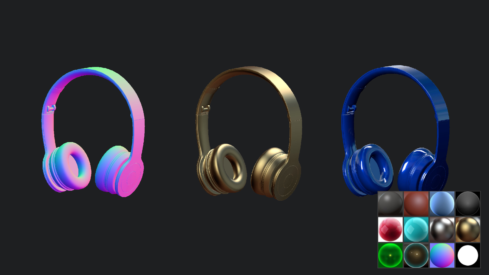
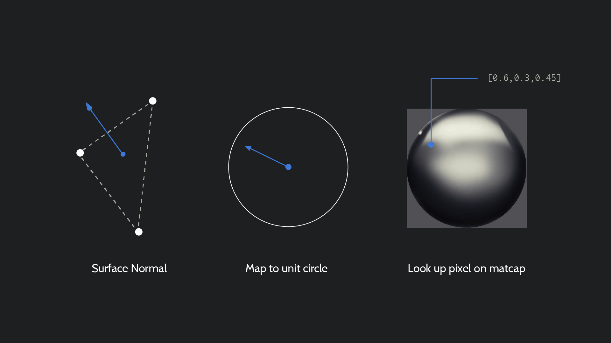

Fake it 'til you make it
Lighting and rendering is a huuuuge topic in 3D but there's one key thing to remember - it's all fake. There have been recent advances in making renderers more physically accurate aka Physically Based Rendering but you can often achieve great results with much simpler methods. Websites typically don't have the same budgets as hi-end games or movies so it's important to have some time saving tricks up your sleeve.
Matcaps
One such method is 'Material Capture Textures' or matcaps for short. They are called such as they capture what a material looks like from a variety of angles and flatten them onto a single image.
This is great for situations where the lighting environment isn't going to change. As the material is being pre-calculated it's also really perfomant while still looking convincing.
Just like we used the normal vector to output a colour in the shader we can also use that vector to look up a pixel from our matcap. It needs a bit of math first to go from 3D direction to a 2D coordinate. Here's how that works.
//VERTEXSHADER
varying vec3 _normal;
void main()
{
_normal = normalMatrix * normal;
gl_Position = projectionMatrix * modelViewMatrix * vec4(position, 1.0);
}
//FRAGMENTSHADER
varying vec3 _normal;
// a 'sampler2D' is an image texture :\
uniform sampler2D matcap;
void main()
{
// This turns our 3D surface direction into a 2D
// texture coordinate
vec4 N = vec4(normalize(_normal), 0);
vec2 muv = vec2(viewMatrix * N) * 0.5 + vec2(0.5,0.5);
// The texture2D function fetches the value of pixel
// from an image for a given coordinate
vec3 rgb = texture2D(matcap, muv).rgb;
gl_FragColor = vec4(rgb, 1.0);
}Loading Textures
As our matcap is an image texture it will need to be loaded before use. We can do that using the built-in TextureLoader class wrapped with the same preloader code as we used with shaders.
function load_texture(name, url)
{
app.assets.total++;
app.assets.load_count++;
var loader = new THREE.TextureLoader();
loader.load
(
url,
function(texture)
{
app.assets.textures[name] = texture;
app.assets.load_count--;
check_assets_loaded();
}
);
}
function preload()
{
// ...
load_texture('matcap_violet', 'img/matcaps/mat_violet.jpg');
// ...
}Once the texture is loaded you can assign it to a material like so...
material.uniforms.matcap.value = textures.matcap_violet;